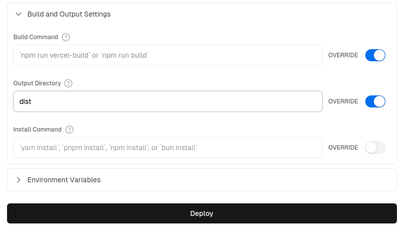

Deploying a Client-Side-Rendered App
If you’ve been building an app that only uses client-side rendering, working with Trunk as a dev server and build tool, the process is quite easy.
trunk build --release
"trunk build" will create a number of build artifacts in a "dist/" directory. Publishing "dist" somewhere online should be all you need to deploy your app. This should work very similarly to deploying any JavaScript application.
We've created several example repositories which show how to set up and deploy a Leptos CSR app to various hosting services.
Note: Leptos does not endorse the use of any particular hosting service - feel free to use any service that supports static site deploys.
Examples:
Github Pages
Deploying a Leptos CSR app to Github pages is a simple affair. First, go to your Github repo's settings and click on "Pages" in the left side menu. In the "Build and deployment" section of the page, change the "source" to "Github Actions". Then copy the following into a file such as ".github/workflows/gh-pages-deploy.yml"
Example
Example
name: Release to Github Pages
on:
push:
branches: [main]
workflow_dispatch:
permissions:
contents: write # for committing to gh-pages branch.
pages: write
id-token: write
# Allow only one concurrent deployment, skipping runs queued between the run in-progress and latest queued.
# However, do NOT cancel in-progress runs as we want to allow these production deployments to complete.
concurrency:
group: "pages"
cancel-in-progress: false
jobs:
Github-Pages-Release:
timeout-minutes: 10
environment:
name: github-pages
url: ${{ steps.deployment.outputs.page_url }}
runs-on: ubuntu-latest
steps:
- uses: actions/checkout@v4 # repo checkout
# Install Rust Nightly Toolchain, with Clippy & Rustfmt
- name: Install nightly Rust
uses: dtolnay/rust-toolchain@nightly
with:
components: clippy, rustfmt
- name: Add WASM target
run: rustup target add wasm32-unknown-unknown
- name: lint
run: cargo clippy & cargo fmt
# If using tailwind...
# - name: Download and install tailwindcss binary
# run: npm install -D tailwindcss && npx tailwindcss -i <INPUT/PATH.css> -o <OUTPUT/PATH.css> # run tailwind
- name: Download and install Trunk binary
run: wget -qO- https://github.com/trunk-rs/trunk/releases/download/v0.18.4/trunk-x86_64-unknown-linux-gnu.tar.gz | tar -xzf-
- name: Build with Trunk
# "${GITHUB_REPOSITORY#*/}" evaluates into the name of the repository
# using --public-url something will allow trunk to modify all the href paths like from favicon.ico to repo_name/favicon.ico .
# this is necessary for github pages where the site is deployed to username.github.io/repo_name and all files must be requested
# relatively as favicon.ico. if we skip public-url option, the href paths will instead request username.github.io/favicon.ico which
# will obviously return error 404 not found.
run: ./trunk build --release --public-url "${GITHUB_REPOSITORY#*/}"
# Deploy to gh-pages branch
# - name: Deploy 🚀
# uses: JamesIves/github-pages-deploy-action@v4
# with:
# folder: dist
# Deploy with Github Static Pages
- name: Setup Pages
uses: actions/configure-pages@v4
with:
enablement: true
# token:
- name: Upload artifact
uses: actions/upload-pages-artifact@v2
with:
# Upload dist dir
path: './dist'
- name: Deploy to GitHub Pages 🚀
id: deployment
uses: actions/deploy-pages@v3
For more on deploying to Github Pages see the example repo here
Vercel
Step 1: Set Up Vercel
In the Vercel Web UI...
- Create a new project
- Ensure
- The "Build Command" is left empty with Override on
- The "Output Directory" is changed to dist (which is the default output directory for Trunk builds) and the Override is on

Step 2: Add Vercel Credentials for GitHub Actions
Note: Both the preview and deploy actions will need your Vercel credentials setup in GitHub secrets
-
Retrieve your Vercel Access Token by going to "Account Settings" > "Tokens" and creating a new token - save the token to use in sub-step 5, below.
-
Install the Vercel CLI using the "npm i -g vercel" command, then run "vercel login" to login to your acccount.
-
Inside your folder, run "vercel link" to create a new Vercel project; in the CLI, you will be asked to 'Link to an existing project?' - answer yes, then enter the name you created in step 1. A new ".vercel" folder will be created for you.
-
Inside the generated ".vercel" folder, open the the "project.json" file and save the "projectId" and "orgId" for the next step.
-
Inside GitHub, go the repo's "Settings" > "Secrets and Variables" > "Actions" and add the following as Repository secrets:
- save your Vercel Access Token (from sub-step 1) as the "VERCEL_TOKEN" secret
- from the ".vercel/project.json" add "projectID" as "VERCEL_PROJECT_ID"
- from the ".vercel/project.json" add "orgId" as "VERCEL_ORG_ID"
For full instructions see "How can I use Github Actions with Vercel"
Step 3: Add Github Action Scripts
Finally, you're ready to simply copy and paste the two files - one for deployment, one for PR previews - from below or from the example repo's ".github/workflows/" folder into your own github workflows folder - then, on your next commit or PR deploys will occur automatically.
Production deployment script: "vercel_deploy.yml"
Example
Example
name: Release to Vercel
on:
push:
branches:
- main
env:
CARGO_TERM_COLOR: always
VERCEL_ORG_ID: ${{ secrets.VERCEL_ORG_ID }}
VERCEL_PROJECT_ID: ${{ secrets.VERCEL_PROJECT_ID }}
jobs:
Vercel-Production-Deployment:
runs-on: ubuntu-latest
environment: production
steps:
- name: git-checkout
uses: actions/checkout@v3
- uses: dtolnay/rust-toolchain@nightly
with:
components: clippy, rustfmt
- uses: Swatinem/rust-cache@v2
- name: Setup Rust
run: |
rustup target add wasm32-unknown-unknown
cargo clippy
cargo fmt --check
- name: Download and install Trunk binary
run: wget -qO- https://github.com/trunk-rs/trunk/releases/download/v0.18.2/trunk-x86_64-unknown-linux-gnu.tar.gz | tar -xzf-
- name: Build with Trunk
run: ./trunk build --release
- name: Install Vercel CLI
run: npm install --global vercel@latest
- name: Pull Vercel Environment Information
run: vercel pull --yes --environment=production --token=${{ secrets.VERCEL_TOKEN }}
- name: Deploy to Vercel & Display URL
id: deployment
working-directory: ./dist
run: |
vercel deploy --prod --token=${{ secrets.VERCEL_TOKEN }} >> $GITHUB_STEP_SUMMARY
echo $GITHUB_STEP_SUMMARY
Preview deployments script: "vercel_preview.yml"
Example
Example
# For more info re: vercel action see:
# https://github.com/amondnet/vercel-action
name: Leptos CSR Vercel Preview
on:
pull_request:
branches: [ "main" ]
workflow_dispatch:
env:
CARGO_TERM_COLOR: always
VERCEL_ORG_ID: ${{ secrets.VERCEL_ORG_ID }}
VERCEL_PROJECT_ID: ${{ secrets.VERCEL_PROJECT_ID }}
jobs:
fmt:
name: Rustfmt
runs-on: ubuntu-latest
steps:
- uses: actions/checkout@v4
- uses: dtolnay/rust-toolchain@nightly
with:
components: rustfmt
- name: Enforce formatting
run: cargo fmt --check
clippy:
name: Clippy
runs-on: ubuntu-latest
steps:
- uses: actions/checkout@v4
- uses: dtolnay/rust-toolchain@nightly
with:
components: clippy
- uses: Swatinem/rust-cache@v2
- name: Linting
run: cargo clippy -- -D warnings
test:
name: Test
runs-on: ubuntu-latest
needs: [fmt, clippy]
steps:
- uses: actions/checkout@v4
- uses: dtolnay/rust-toolchain@nightly
- uses: Swatinem/rust-cache@v2
- name: Run tests
run: cargo test
build-and-preview-deploy:
runs-on: ubuntu-latest
name: Build and Preview
needs: [test, clippy, fmt]
permissions:
pull-requests: write
environment:
name: preview
url: ${{ steps.preview.outputs.preview-url }}
steps:
- name: git-checkout
uses: actions/checkout@v4
- uses: dtolnay/rust-toolchain@nightly
- uses: Swatinem/rust-cache@v2
- name: Build
run: rustup target add wasm32-unknown-unknown
- name: Download and install Trunk binary
run: wget -qO- https://github.com/trunk-rs/trunk/releases/download/v0.18.2/trunk-x86_64-unknown-linux-gnu.tar.gz | tar -xzf-
- name: Build with Trunk
run: ./trunk build --release
- name: Preview Deploy
id: preview
uses: amondnet/vercel-action@v25.1.1
with:
vercel-token: ${{ secrets.VERCEL_TOKEN }}
github-token: ${{ secrets.GITHUB_TOKEN }}
vercel-org-id: ${{ secrets.VERCEL_ORG_ID }}
vercel-project-id: ${{ secrets.VERCEL_PROJECT_ID }}
github-comment: true
working-directory: ./dist
- name: Display Deployed URL
run: |
echo "Deployed app URL: ${{ steps.preview.outputs.preview-url }}" >> $GITHUB_STEP_SUMMARY
See the example repo here for more.
Spin - Serverless WebAssembly
Another option is using a serverless platform such as Spin. Although Spin is open source and you can run it on your own infrastructure (eg. inside Kubernetes), the easiest way to get started with Spin in production is to use the Fermyon Cloud.
Start by installing the Spin CLI using the instructions, here, and creating a Github repo for your Leptos CSR project, if you haven't done so already.
-
Open "Fermyon Cloud" > "User Settings". If you’re not logged in, choose the Login With GitHub button.
-
In the “Personal Access Tokens”, choose “Add a Token”. Enter the name “gh_actions” and click “Create Token”.
-
Fermyon Cloud displays the token; click the copy button to copy it to your clipboard.
-
Go into your Github repo and open "Settings" > "Secrets and Variables" > "Actions" and add the Fermyon cloud token to "Repository secrets" using the variable name "FERMYON_CLOUD_TOKEN"
-
Copy and paste the following Github Actions scripts (below) into your ".github/workflows/<SCRIPT_NAME>.yml" files
-
With the 'preview' and 'deploy' scripts active, Github Actions will now generate previews on pull requests & deploy automatically on updates to your 'main' branch.
Production deployment script: "spin_deploy.yml"
Example
Example
# For setup instructions needed for Fermyon Cloud, see:
# https://developer.fermyon.com/cloud/github-actions
# For reference, see:
# https://developer.fermyon.com/cloud/changelog/gh-actions-spin-deploy
# For the Fermyon gh actions themselves, see:
# https://github.com/fermyon/actions
name: Release to Spin Cloud
on:
push:
branches: [main]
workflow_dispatch:
permissions:
contents: read
id-token: write
# Allow only one concurrent deployment, skipping runs queued between the run in-progress and latest queued.
# However, do NOT cancel in-progress runs as we want to allow these production deployments to complete.
concurrency:
group: "spin"
cancel-in-progress: false
jobs:
Spin-Release:
timeout-minutes: 10
environment:
name: production
url: ${{ steps.deployment.outputs.app-url }}
runs-on: ubuntu-latest
steps:
- uses: actions/checkout@v4 # repo checkout
# Install Rust Nightly Toolchain, with Clippy & Rustfmt
- name: Install nightly Rust
uses: dtolnay/rust-toolchain@nightly
with:
components: clippy, rustfmt
- name: Add WASM & WASI targets
run: rustup target add wasm32-unknown-unknown && rustup target add wasm32-wasi
- name: lint
run: cargo clippy & cargo fmt
# If using tailwind...
# - name: Download and install tailwindcss binary
# run: npm install -D tailwindcss && npx tailwindcss -i <INPUT/PATH.css> -o <OUTPUT/PATH.css> # run tailwind
- name: Download and install Trunk binary
run: wget -qO- https://github.com/trunk-rs/trunk/releases/download/v0.18.2/trunk-x86_64-unknown-linux-gnu.tar.gz | tar -xzf-
- name: Build with Trunk
run: ./trunk build --release
# Install Spin CLI & Deploy
- name: Setup Spin
uses: fermyon/actions/spin/setup@v1
# with:
# plugins:
- name: Build and deploy
id: deployment
uses: fermyon/actions/spin/deploy@v1
with:
fermyon_token: ${{ secrets.FERMYON_CLOUD_TOKEN }}
# key_values: |-
# abc=xyz
# foo=bar
# variables: |-
# password=${{ secrets.SECURE_PASSWORD }}
# apikey=${{ secrets.API_KEY }}
# Create an explicit message to display the URL of the deployed app, as well as in the job graph
- name: Deployed URL
run: |
echo "Deployed app URL: ${{ steps.deployment.outputs.app-url }}" >> $GITHUB_STEP_SUMMARY
Preview deployment script: "spin_preview.yml"
Example
Example
# For setup instructions needed for Fermyon Cloud, see:
# https://developer.fermyon.com/cloud/github-actions
# For the Fermyon gh actions themselves, see:
# https://github.com/fermyon/actions
# Specifically:
# https://github.com/fermyon/actions?tab=readme-ov-file#deploy-preview-of-spin-app-to-fermyon-cloud---fermyonactionsspinpreviewv1
name: Preview on Spin Cloud
on:
pull_request:
branches: ["main", "v*"]
types: ['opened', 'synchronize', 'reopened', 'closed']
workflow_dispatch:
permissions:
contents: read
pull-requests: write
# Allow only one concurrent deployment, skipping runs queued between the run in-progress and latest queued.
# However, do NOT cancel in-progress runs as we want to allow these production deployments to complete.
concurrency:
group: "spin"
cancel-in-progress: false
jobs:
Spin-Preview:
timeout-minutes: 10
environment:
name: preview
url: ${{ steps.preview.outputs.app-url }}
runs-on: ubuntu-latest
steps:
- uses: actions/checkout@v4 # repo checkout
# Install Rust Nightly Toolchain, with Clippy & Rustfmt
- name: Install nightly Rust
uses: dtolnay/rust-toolchain@nightly
with:
components: clippy, rustfmt
- name: Add WASM & WASI targets
run: rustup target add wasm32-unknown-unknown && rustup target add wasm32-wasi
- name: lint
run: cargo clippy & cargo fmt
# If using tailwind...
# - name: Download and install tailwindcss binary
# run: npm install -D tailwindcss && npx tailwindcss -i <INPUT/PATH.css> -o <OUTPUT/PATH.css> # run tailwind
- name: Download and install Trunk binary
run: wget -qO- https://github.com/trunk-rs/trunk/releases/download/v0.18.2/trunk-x86_64-unknown-linux-gnu.tar.gz | tar -xzf-
- name: Build with Trunk
run: ./trunk build --release
# Install Spin CLI & Deploy
- name: Setup Spin
uses: fermyon/actions/spin/setup@v1
# with:
# plugins:
- name: Build and preview
id: preview
uses: fermyon/actions/spin/preview@v1
with:
fermyon_token: ${{ secrets.FERMYON_CLOUD_TOKEN }}
github_token: ${{ secrets.GITHUB_TOKEN }}
undeploy: ${{ github.event.pull_request && github.event.action == 'closed' }}
# key_values: |-
# abc=xyz
# foo=bar
# variables: |-
# password=${{ secrets.SECURE_PASSWORD }}
# apikey=${{ secrets.API_KEY }}
- name: Display Deployed URL
run: |
echo "Deployed app URL: ${{ steps.preview.outputs.app-url }}" >> $GITHUB_STEP_SUMMARY